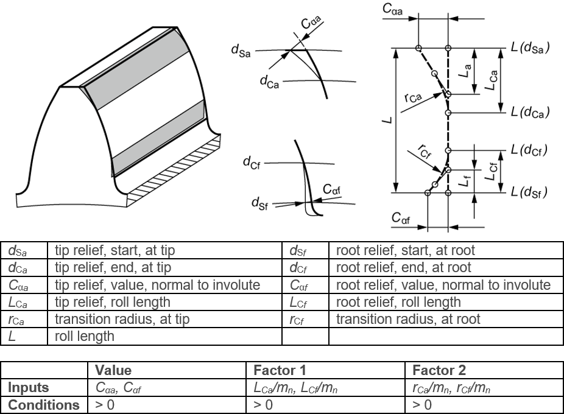

|
|
|


齿顶和齿根修形，带过渡半径的线性修形
图（见图15.38）显示了在齿廓图中定义的带过渡半径的线性齿顶和齿根修形。因子1 和 因子2 设置也显示在此图中。齿顶和齿根处的修形起始点可在 选项卡中设置。修形区与渐开线之间的过渡是相切的。

图15.38：带过渡半径的线性齿顶和齿根修形
如果 因子2 = 0，则 rCa 按使 La = 0.8 · LCa 成立的方式计算，并计算和应用相应的 因子2。如果 因子2 过大，以致 La < 0.75 · LCa 成立，则 rCa 按使 La = 0.75 · LCa 成立的方式计算，并计算和应用相应的 因子2。
同样，为表示齿根修形，请输入 Cαf 的值，以及 LCf 与 mn 的比值和 rCf 与 mn 的比值。
Tip and root relief, linear with transition radius
Figure (see Figure 15.38) shows a linear tip and root relief with a transition radius as defined in the profile diagram. The Factor 1 and Factor 2 settings are also shown in this figure. The start of modification at tip and at root can be set in the tab. The transition between the relief and involute is tangential.
Figure 15.38: Linear tip and root relief with transition radius
If Factor 2 = 0, then rCa is calculated in such a way that La = 0.8 · LCa applies. The corresponding Factor 2 is calculated and applied. If Factor 2 is so large that La < 0.75 · LCa applies, then rCa is calculated in such a way that La = 0.75 · LCa applies. The corresponding Factor 2 is calculated and applied.
Similarly, to represent root reliefs, input the values for Cαf and the quotient from LCf and mn, and the quotient from rCf and mn.